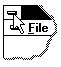

Use this command to close the active window or dialog box.
Double-clicking a Control-menu box is the same as choosing the Close command.

Keys: CTRL+F4 closes a document window
ALT+F4 closes the Social Security Benefit Calculator window or dialog box